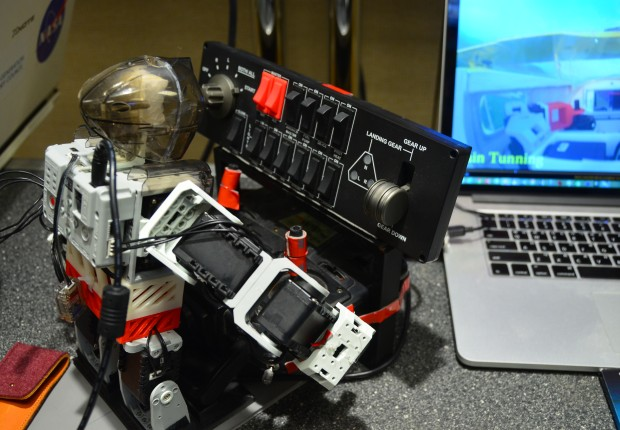
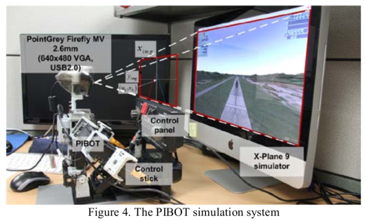
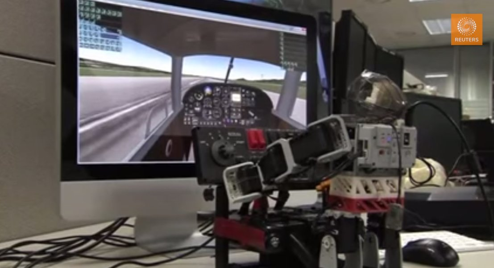
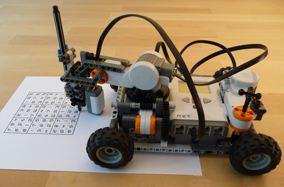
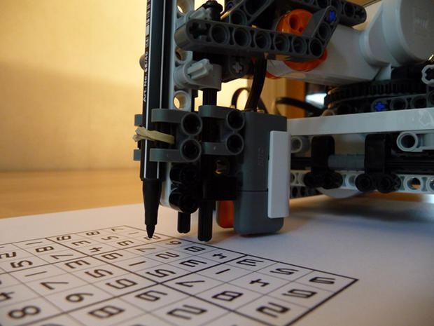
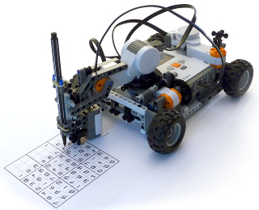

An incredible humanoid robot, I- Sobot is one of the smallest humanoid robots, with a height of just 6.5 inches and a weight of
12 ounces. The ‘Robot of 2008' winner in Japan’s Ministry of Economy, Trade and Industry (METI).
It has become the most-produced robot in the world. Its advanced technology, together with the entertainment value it offers,
are based primarily on its 17 miniature servo motors. This small robot can walk, play air guitar, and perform about 200 moves.
This robot uses the gyro sensors for balancing, and can be controlled by either remote control or voice commands.
PIBOT



PIBOT can take to the virtual skies with near perfect reaction times and near perfect inputs, meaning that this is probably a
better pilot than most, if not all actual pilots. Of course, that is right up until the moment when a situation is encountered
that he isn’t programmed for, but we all know it’s only a matter of time until the machines take over anyway.
Sodoku Solver Robot



The robot performs a quick scan of the puzzle, sweeping the light sensor across the page to determine which cells are empty.
Once it takes account of the blank areas, it looks through all the non-empty cells pixel by pixel, eventually creating a digital
representation of the Sudoku page. To determine the digits on each square, it cleans up the scanned image, removes isolated blotches,
thins the lines, determines the width, counts the tips and finds their direction.
.gif)